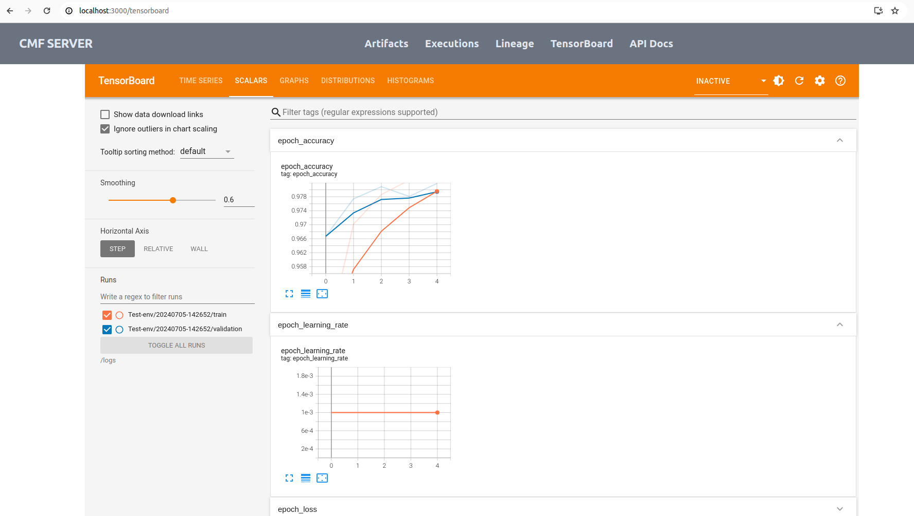

How to Use TensorBoard with CMF¶
-
Copy the contents of the
example-get-starteddirectory from
cmf/examples/example-get-startedinto a separate directory outside the CMF repository. -
Execute the following command to install the TensorFlow library in the current directory:
pip install tensorflow -
Create a new Python file (e.g.,
tensorflow_log.py) and copy the following code:import datetime import tensorflow as tf mnist = tf.keras.datasets.mnist (x_train, y_train), (x_test, y_test) = mnist.load_data() x_train, x_test = x_train / 255.0, x_test / 255.0 def create_model(): return tf.keras.models.Sequential([ tf.keras.layers.Flatten(input_shape=(28, 28), name='layers_flatten'), tf.keras.layers.Dense(512, activation='relu', name='layers_dense'), tf.keras.layers.Dropout(0.2, name='layers_dropout'), tf.keras.layers.Dense(10, activation='softmax', name='layers_dense_2') ]) model = create_model() model.compile( optimizer='adam', loss='sparse_categorical_crossentropy', metrics=['accuracy'] ) log_dir = "logs/fit/" + datetime.datetime.now().strftime("%Y%m%d-%H%M%S") tensorboard_callback = tf.keras.callbacks.TensorBoard(log_dir=log_dir, histogram_freq=1) model.fit(x=x_train,y=y_train,epochs=5,validation_data=(x_test, y_test),callbacks=[tensorboard_callback]) train_dataset = tf.data.Dataset.from_tensor_slices((x_train, y_train)) test_dataset = tf.data.Dataset.from_tensor_slices((x_test, y_test)) train_dataset = train_dataset.shuffle(60000).batch(64) test_dataset = test_dataset.batch(64) loss_object = tf.keras.losses.SparseCategoricalCrossentropy() optimizer = tf.keras.optimizers.Adam() # Define our metrics train_loss = tf.keras.metrics.Mean('train_loss', dtype=tf.float32) train_accuracy = tf.keras.metrics.SparseCategoricalAccuracy('train_accuracy') test_loss = tf.keras.metrics.Mean('test_loss', dtype=tf.float32) test_accuracy = tf.keras.metrics.SparseCategoricalAccuracy('test_accuracy') def train_step(model, optimizer, x_train, y_train): with tf.GradientTape() as tape: predictions = model(x_train, training=True) loss = loss_object(y_train, predictions) grads = tape.gradient(loss, model.trainable_variables) optimizer.apply_gradients(zip(grads, model.trainable_variables)) train_loss(loss) train_accuracy(y_train, predictions) def test_step(model, x_test, y_test): predictions = model(x_test) loss = loss_object(y_test, predictions) test_loss(loss) test_accuracy(y_test, predictions) current_time = datetime.datetime.now().strftime("%Y%m%d-%H%M%S") train_log_dir = 'logs/gradient_tape/' + current_time + '/train' test_log_dir = 'logs/gradient_tape/' + current_time + '/test' train_summary_writer = tf.summary.create_file_writer(train_log_dir) test_summary_writer = tf.summary.create_file_writer(test_log_dir) model = create_model() # reset our model EPOCHS = 5 for epoch in range(EPOCHS): for (x_batch, y_batch) in train_dataset: train_step(model, optimizer, x_batch, y_batch) with train_summary_writer.as_default(): tf.summary.scalar('loss', train_loss.result(), step=epoch) tf.summary.scalar('accuracy', train_accuracy.result(), step=epoch) for (x_batch, y_batch) in test_dataset: test_step(model, x_batch, y_batch) with test_summary_writer.as_default(): tf.summary.scalar('loss', test_loss.result(), step=epoch) tf.summary.scalar('accuracy', test_accuracy.result(), step=epoch) template = 'Epoch {}, Loss: {}, Accuracy: {}, Test Loss: {}, Test Accuracy: {}' print(template.format( epoch + 1, train_loss.result(), train_accuracy.result() * 100, test_loss.result(), test_accuracy.result() * 100 ))For more detailed information, check out the TensorBoard documentation.
-
Execute the TensorFlow log script using the following command:
python3 tensorflow_log.py -
The above script will automatically create a
logsdirectory inside your current directory. -
Start the CMF server and configure the CMF client.
-
Use the following command to run the test script, which will generate the MLMD file:
sh test_script.shNote-MLMDstands for ML Metadata, which is typically stored as a SQLite file generated during pipeline runs. The file extension and name may vary depending on your setup. -
Use the following command to push the generated MLMD and TensorFlow log files to the CMF server:
cmf metadata push -p 'pipeline-name' -t 'tensorboard-log-file-name' -
Go to the CMF server and navigate to the TensorBoard tab. You will see an interface similar to the following image:
